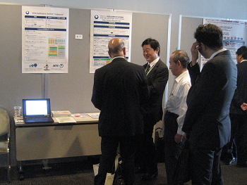
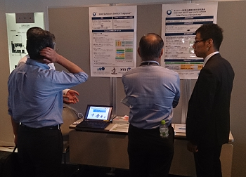
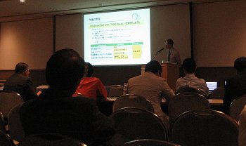
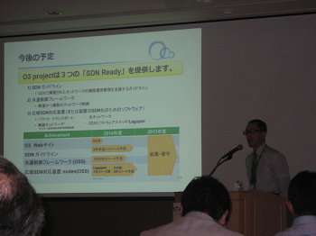

ICTイノベーションフォーラム 2014
日時：2014年10月7日
場所：幕張メッセ 国際会議場3階 301会議室（千葉県・幕張市）
本プロジェクトの成果をご覧いただくことを目的として、ICTイノベーションフォーラム2014に出展しました。
会場内のブースでは、研究成果に関するについて、パネル展示、およびデモ展示を行いました。


また、メインステージにおいて、本プロジェクトの代表として、日本電気株式会社 情報・ナレッジ研究所 桐葉 佳明 技術主幹より、研究活動に関する成果について発表しました。


ブースまでお運びいただきました皆様、誠にありがとうございました。